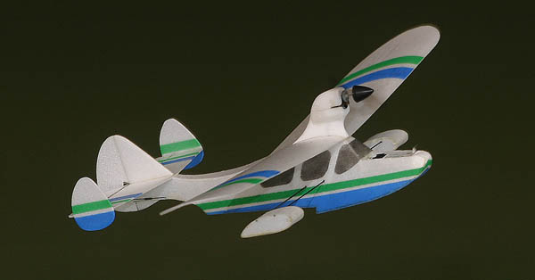
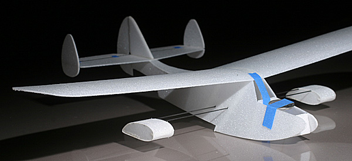
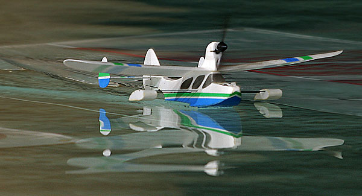
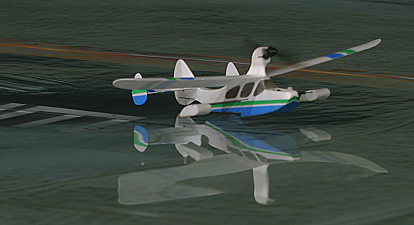

Micro Drake |
|---|
| Posted 10/26/07, Updated 4/17/12 |
|  |
| One of the great proponents of RC seaplanes in the 1970's and 1980's, Ken Willard drew and published several designs during that time. His Drake II seaplane was featured in the September 1980 issue of Model Aviation, and I was inspired to build one immediately. My original Drake II has served me well with a variety of glow engines over the years, and I have long considered building another one for electric power. Instead of a model more traditionally sized, I built this model designed around the 2.4GHz equipment from a ParkZone Cessna 210 Centurion. Though the Cessna is now discontinued, ParkZone has several more recent models that could serve the purpose as well. |
| My Micro Drake is approximately one third the size of Ken Willard's original. Construction is primarily .050 Durobatics foam, with single surface wings heat formed over a carved balsa plug. The motor pylon is from 6mm foam, and there is a small block of expanded polystyrene inset as a nose block. I used UHU Creativ contact adhesive to hold it all together and seal the seams, then sprayed the color trim with Tamiya's polycarbonate paint. What about the weight gain? I weighed the paint on the wing at 30mg. Based on that number, I have calculated the total penalty from the paint at 140 mg., or less than one percent of the flying weight of the model. Not bad for the extra visual interest it adds. |
| 
Rough assembly for glide testing. I used a US nickel for ballast to establish the CG |
| My initial test flights consisted of several test glides in the living room and then out in the yard. I established the CG by ballasting the partially completed empty airframe with a nickel taped on the nose, then determined the equipment locations needed to maintain that balance point. Two nights later I was ready for the official debut. Three hand launches out in the driveway just before midnight on October 27, 2007 were very successful. About 3 minutes of total flight time with a series of circles and figure 8s shows me that it is a bit pitch sensitive, but settles nicely into a smooth flight pattern if you don't chase it. The rudder response is fine, but almost feels sluggish against the elevator. Now the big question. Could it get off the water? |
| The next evening after work, I floated it in a large puddle in the office parking lot and pushed the stick forward. It came up on step, accelerated briefly and lifted off. Success! |
|
JR Indoor Electric Festival Update
Fly RC contributor Jack Tracey and I decided to drive to the JR Indoor Electric Festival 2007 a couple of weeks before the event. Knowing that I could bring a few models, I built the Micro Drake specifically to fly off of Spektrum Lake, a temporary 15x60 foot basin at JRIEF. |
|
The initial ROW attempts were successful, but performance was limited. It would get off the water, but only with a fresh battery, and when completely dry. A slight voltage reduction and the extra water weight were enough to keep it from flying.
After a few trials, I realized that the port float was mounted a bit low, and was dragging in the water when throttling up. A little minor surgery at JRIEF saw the float raised out of the water, and the performance greatly increased. As near as I can estimate, the Micro Drake flew for about 3.5 hours at JRIEF, with countless takeoffs and landings from the pond, as well as many splash and goes. The success of the weekend was capped off with an unexpected award for the Best Micro RC Aircraft. |
| 
Running on step at Spektrum Lake, JR Indoor Electric Festival 2007 |
| 
Joe Malinchak lifts off ever so smoothly while I wield my camera |
|
I often use Photoshop to sketch potential color schemes. |
| Micro Drake Stats | |
|---|---|
| Wingspan: | 15.75 inches |
| Length: | 11.25 inches |
| Wing Area: | 45 square inches |
| Flying Weight: | .617 ounces - 17.5 grams |
| Wing Loading: | 1.97 ounces per square foot |
| All equipment sourced from a ParkZone Cessna 210 Centurion | |
Copyright 2007-2012, Thayer Syme. All rights reserved